CSI 居家安全守护系统 · 专业工程图
从硬件感知到子女端展示的完整四层架构（31节点/19连线）
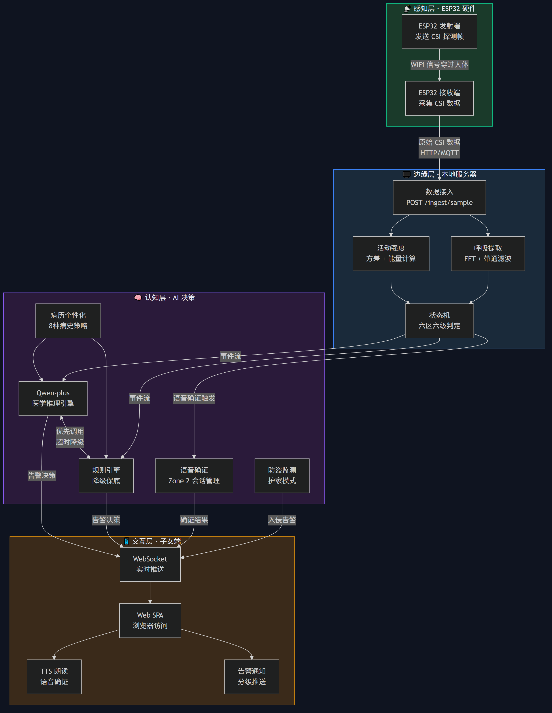
子女端 Web SPA 的页面结构与组件关系（39节点/39连线）
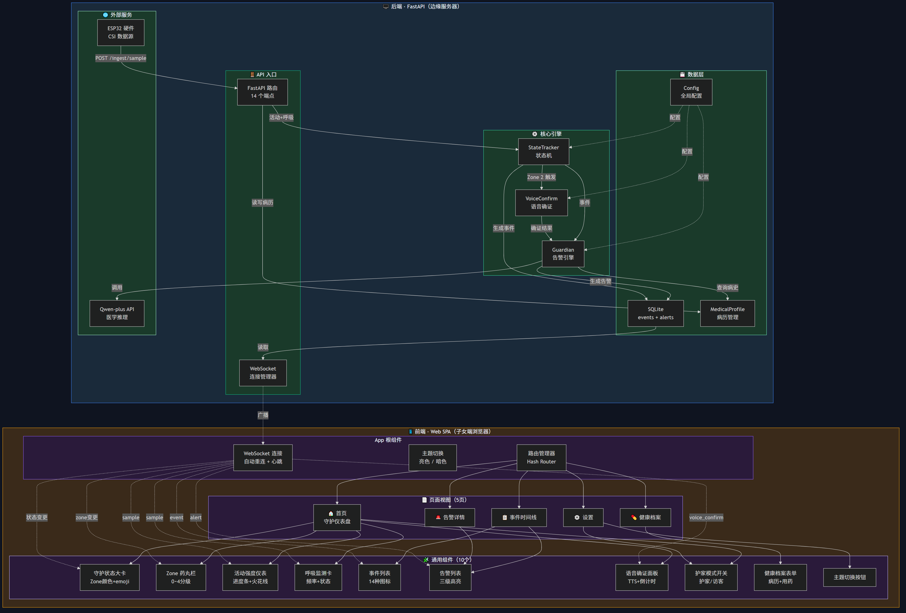
一个跌倒事件从硬件感知到子女端的完整链路（22节点/14连线）
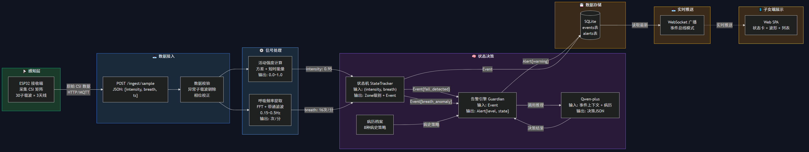
Zone 状态机升降级规则与告警处理流程（22节点/29连线）
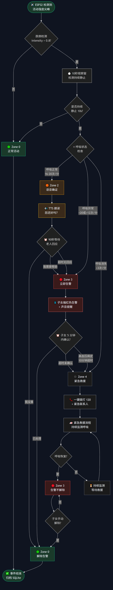
Zone 0/1/2/3/4 之间的完整升降级规则，核心决策逻辑（9节点/14连线）
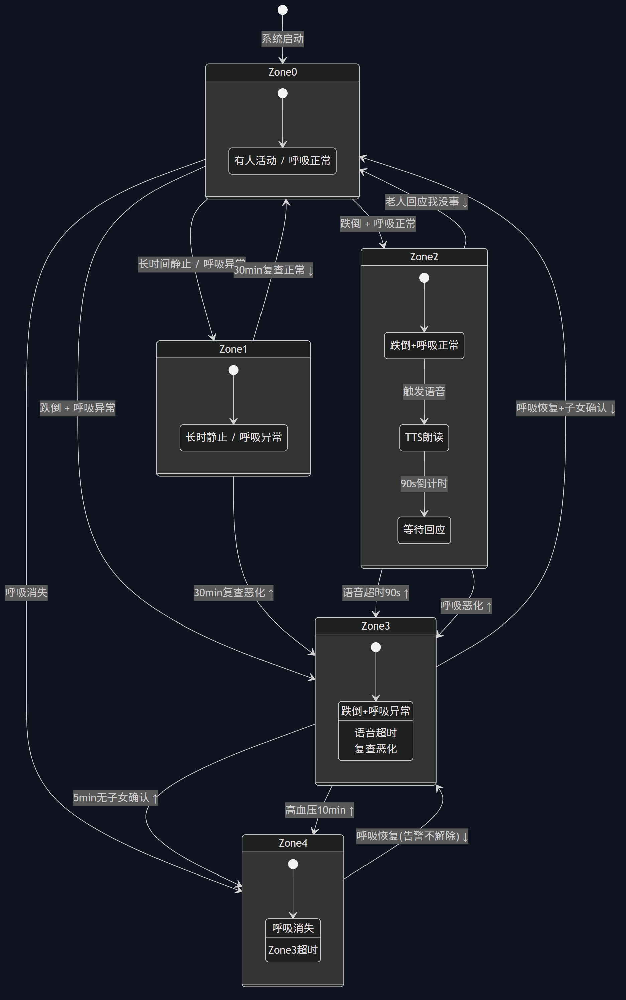
14 个 REST 端点 + WebSocket 实时通道的调用关系，前后端联调必备（23节点/7连线）
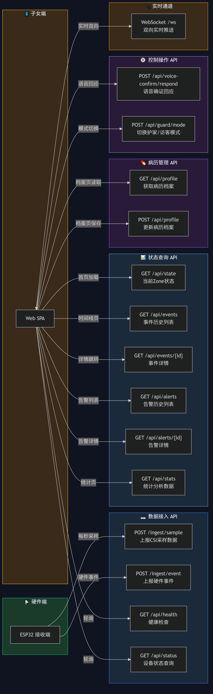
含 Zone 2/3/4 三个分支的完整跌倒时序，比图三更详细（29节点）
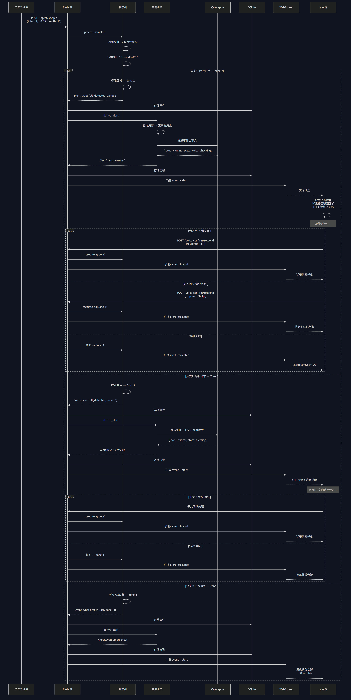
四阶段开发路线图，立项汇报用（26节点）
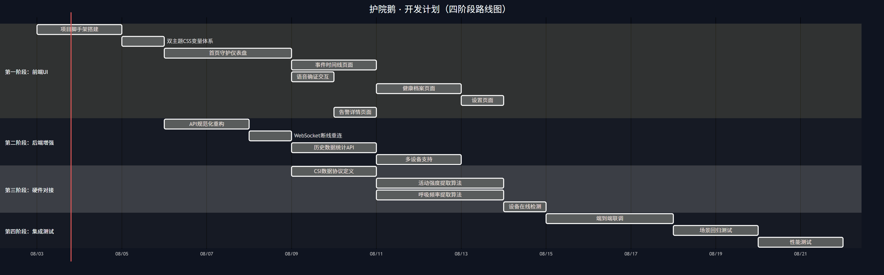
解决 P0 遗漏 #1/#2 + P1 #12/#13：补全监控/容灾/鉴权/加密四大工程实践
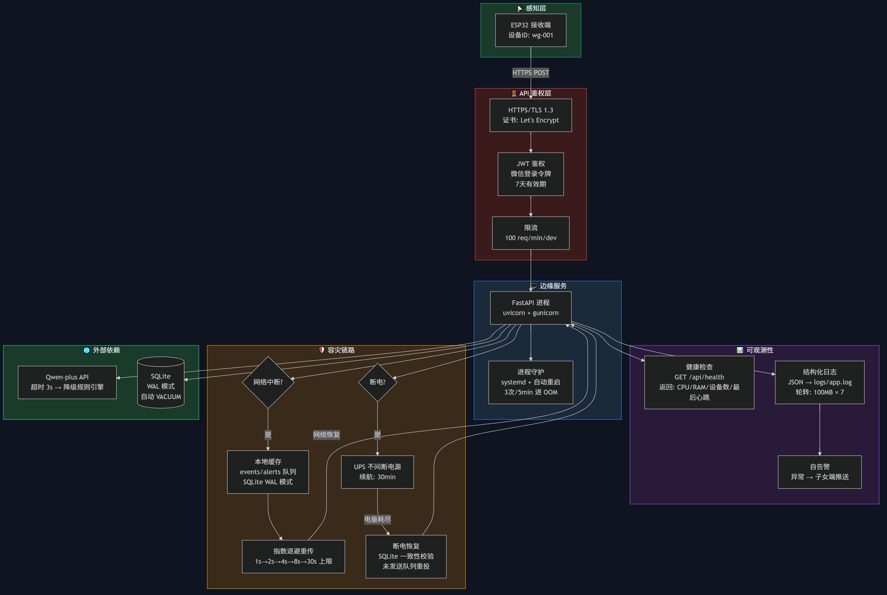
解决 P0 遗漏 #4/#7 + P1 #9：显式标注 CSI 采样参数 + 隐私脱敏边界（原始CSI不出本地）
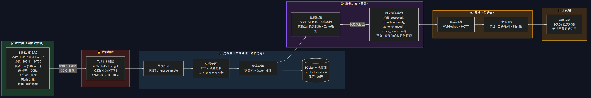
解决 P2 遗漏 #17：v1.0 MVP → v1.1 增强 → v2.0 多房间 → v3.0 AI增强 完整演进路径
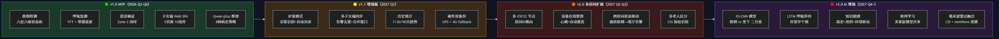
解决 P2 遗漏 #15/#16/#18：12场景测试矩阵 + 部署配置 + 功耗预算 + 6项性能指标
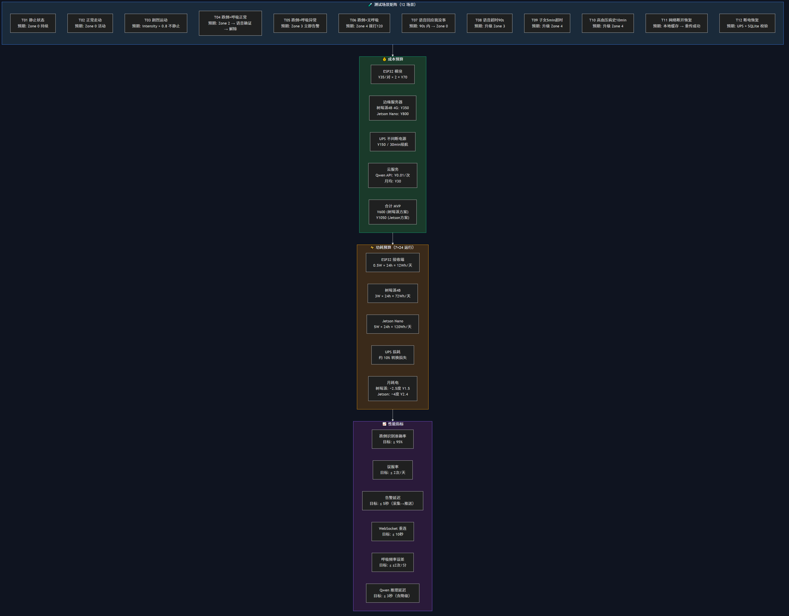
08-03→08-13 五阶段开发时序：前端UI → 后端API → 硬件对接 → 集成测试 → 文档视频
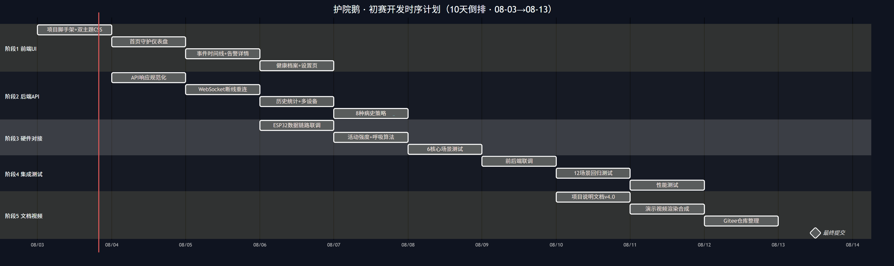